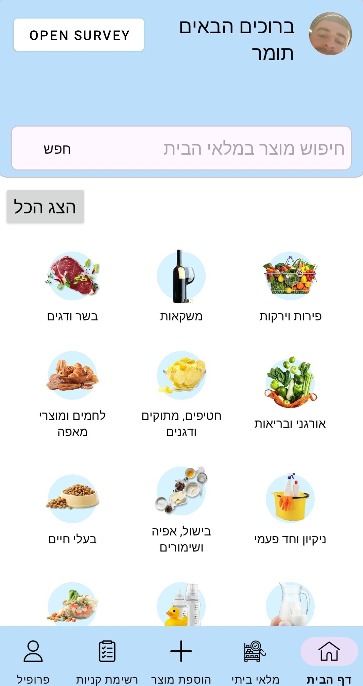

📋 Smart Survey Library
Smart Survey is an Android library that allows developers to display surveys inside their apps. The SDK can load a survey from a server (by ID or randomly), render it as a UI component, and submit the user's answers back to the server.
This library is designed to be simple to integrate and easy to use inside any Android project.
✨ Features
- ✅ Easy SDK initialization using
SmartSurvey.init(...) - ✅ Load surveys by ID
- ✅ Load random surveys
- ✅ Supports multiple question types:
- Text input
- Single choice (radio buttons)
- ✅ Automatic submission to the server
- ✅ Callback listener for events
📦 Installation
Step 1 - Add JitPack repository
In your project root settings.gradle.kts, add JitPack:
dependencyResolutionManagement {
repositoriesMode.set(RepositoriesMode.FAIL_ON_PROJECT_REPOS)
repositories {
google()
mavenCentral()
maven("https://jitpack.io")
}
}
Step 2 - Add the dependency
In your app module build.gradle.kts, add:
dependencies {
implementation("com.github.Tomerlevy104:smart-survey-sdk:v1.0.1")
}
Sync Gradle and wait for the dependency to download.
🚀 Usage
1. Initialize the SDK
You must initialize the SDK once before using it.
The recommended place is Application.onCreate() or inside your first Activity.
SmartSurvey.init(
context = applicationContext,
baseUrl = "https://survey-sdk-server.onrender.com/",
apiKey = "YOUR_API_KEY"
)
🔑 API Key: You can get your API key from the Admin Panel after creating an account.
2. Create the SmartSurveyView
You can create the survey view in two different ways:
Option A: Add the view in XML (static)
Add SmartSurveyView directly to your layout:
<com.seminar.smart_survey_sdk.SmartSurveyView
android:id="@+id/smartSurveyView"
android:layout_width="match_parent"
android:layout_height="wrap_content" />
Then use it in your Activity/Fragment:
val smartSurveyView = findViewById<SmartSurveyView>(R.id.smartSurveyView)
smartSurveyView.setListener(...)
smartSurveyView.loadRandomSurvey()
Option B: Create the view in Kotlin (dynamic / overlay)
This option is useful for overlays, popups, dialogs, or if you want to add/remove the survey dynamically:
val smartSurveyView = SmartSurveyView(this).apply {
setListener(...)
}
surveyContainer.addView(
smartSurveyView,
FrameLayout.LayoutParams(
FrameLayout.LayoutParams.MATCH_PARENT,
FrameLayout.LayoutParams.MATCH_PARENT
)
)
smartSurveyView.loadRandomSurvey()
Both approaches are supported because
SmartSurveyViewprovides constructors for XML inflation and programmatic creation.
3. Load a survey
Option A: Load survey by ID
smartSurveyView.loadSurveyById("YOUR_SURVEY_ID")
Option B: Load a random survey
smartSurveyView.loadRandomSurvey()
4. Listen to survey events
You can register a listener to get callbacks:
smartSurveyView.setListener(object : SmartSurveyListener {
override fun onSurveyLoaded(surveyId: String) {
// Survey UI was loaded successfully
}
override fun onSurveySubmitted(surveyId: String) {
// Survey answers were submitted successfully
}
override fun onError(error: Throwable) {
// Any error during loading or submitting
error.printStackTrace()
}
})
5. Full example (Activity)
class MainActivity : AppCompatActivity() {
private lateinit var smartSurveyView: SmartSurveyView
override fun onCreate(savedInstanceState: Bundle?) {
super.onCreate(savedInstanceState)
setContentView(R.layout.activity_main)
// 1) Init SDK
SmartSurvey.init(
context = applicationContext,
baseUrl = "https://survey-sdk-server.onrender.com/",
apiKey = "YOUR_API_KEY"
)
// 2) Find view
smartSurveyView = findViewById(R.id.smartSurveyView)
// 3) Listener
smartSurveyView.setListener(object : SmartSurveyListener {
override fun onSurveyLoaded(surveyId: String) {
Toast.makeText(this@MainActivity, "Survey loaded: $surveyId", Toast.LENGTH_SHORT).show()
}
override fun onSurveySubmitted(surveyId: String) {
Toast.makeText(this@MainActivity, "Survey submitted!", Toast.LENGTH_SHORT).show()
}
override fun onError(error: Throwable) {
Toast.makeText(this@MainActivity, "Error: ${error.message}", Toast.LENGTH_SHORT).show()
}
})
// 4) Load survey
smartSurveyView.loadRandomSurvey()
}
}
🖼️ Screenshots
Open Survey Button (Host App UI)

Survey Loading State (Overlay + Spinner)

Survey Screen (Questions & Answers UI)

🛠️ Technology
This SDK was built using:
- Kotlin
- Material Design Components
- Retrofit (API requests)
- OkHttp (HTTP client + Interceptor)
📌 Public API Summary
The main public API for SDK users:
SmartSurvey.init(context, baseUrl, apiKey)SmartSurveyView.setListener(listener)SmartSurveyView.loadSurveyById(surveyId)SmartSurveyView.loadRandomSurvey()
👨💻 Author
Developed by Tomer Levy